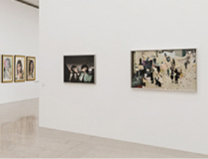
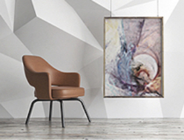
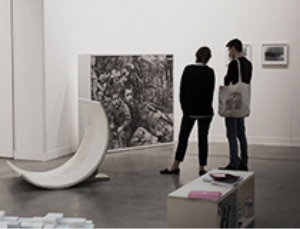

모두가 함께 나누고 누릴 수 있는 문화 예술 활동 지향
태광그룹은 창업주인 일주(一洲) 이임용 회장과 세화(世和) 이선애 이사장의 사회공헌의 뜻을 실현하기 위해 1990년 일주학술문화재단을 설립하여 인재육성에 앞장서고, 문화∙예술의 대중화에 기여하고자 2009년 세화예 술문화재단을 설립하였습니다.
세화예술문화재단은 ‘문화시민 양성을 위한 예술’, ‘폭 넓은 세계 문화 수용을 위한 예술’, ‘미래를 준비하는 예술’이 라는 3가지 비전으로 서울 도심에 공공미술작품과 다양한 국내외 전시를 개최함으로써 문화예술 발전에 기여하고 있습니다.
2017년 신문로 흥국생명빌딩 3층에 ‘세화미술관’을 새롭게 개관하여 재단의 문화예술사업을 확장하고 보다 대중 에게 가까이 다가서고자 합니다.
세화예술문화재단은 연중 특색 있는 전시 기획으로 문화예술의 대중화에 힘쓰고 다채로운 문화예술교육 프로그 램을 제공합니다. 앞으로도 국내외 미술문화를 선도하고 모두가 함께 공유할 수 있는 문화예술의 장을 펼쳐 나가 겠습니다.
미술관 운영
연구활동
전시개최
교육 프로그램 운영
예술문화 지원
예술을 통한 재능나눔
학술 세미나 후원
신진작가 지원
작가 작품활동 지원